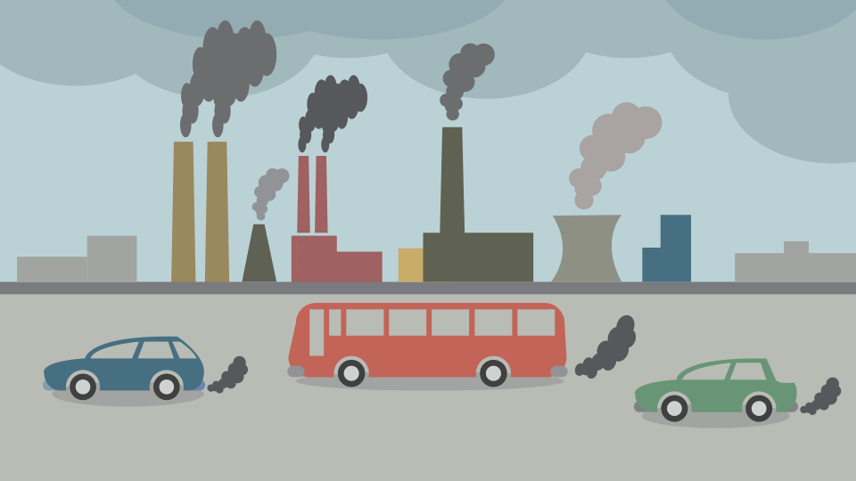

Air pollution has been identified as one of the biggest threats to human health by the WHO Global Air Quality Guidelines, leading to respiratory disease, cardiovascular disease, and cancer. This project will implement innovative AI (Artificial Intelligence) techniques to provide fine-grained air quality sensing for residents in areas without air quality monitoring sensors.
We have assigned roles and initiated research on the project. I will be focusing on the AI model. The AI model will need to predict air quality for any given location. The first step is determining which data about the target location will be utilized by the model. We need spatial and temporal details. We plan to extract both static and sequential environment features from public API's to feed the model.
Log sentence 2
Log sentence 3
Log sentence 1
Log sentence 2
Log sentence 3